예술은 무엇일까요?
예술:미적(美的) 작품을 형성시키는 인간의 창조 활동.(출처:두산백과)
우리는 익숙하게 접하는 음악, 연극, 그림, 영화 등을 예술이라고 말합니다. 그렇다면 게임도 예술일까요? 예술이란 것은 모호한 개념이고 주관성이 개입할 수 밖에 없는 개념이라 생각하기에 게임을 예술로 볼 수도 있고 예술이 아니라고도 볼 수 있을 것 같습니다. 양 쪽의 의견 모두 가치가 있고 존중할만하다고 생각합니다.
하지만 게임이 예술이 아니라고 생각하시는 분들도 생각이 바뀔만한 게임을 가져왔습니다. 이 게임을 하신다면 적어도 이 게임만큼은 예술이라 생각하실겁니다.
그 게임은 바로 '고로고아' 입니다.
1. 소개
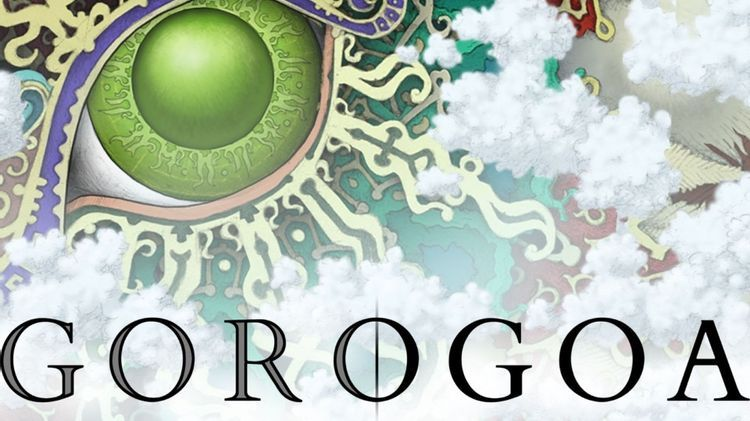
이 게임은 제이슨 로버츠라는 제작자가 6년에 걸쳐 개발한 퍼즐 어드벤처 게임입니다. 어디서도 보시지 못 했을 플레이 방식의 게임인데 그림을 서로 끼워맞춰 그림 속 내용을 조작하는 방식의 게임입니다. 약 6년동안 수작업으로 만든 일러스트와 작품의 주제가 어우러져 예술이라 평가받는 게임 중 하나입니다.
2.플레이 방식
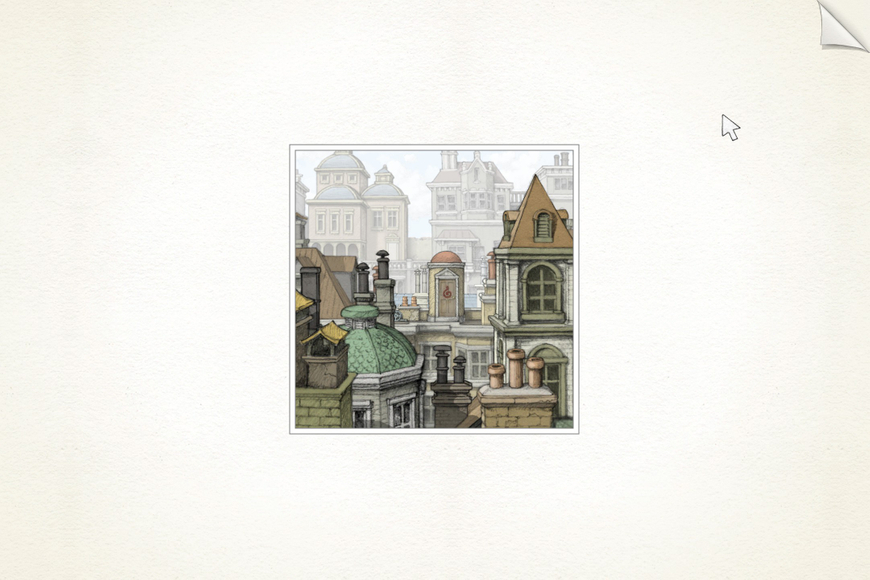
게임은 이 그림과 함께 시작합니다.
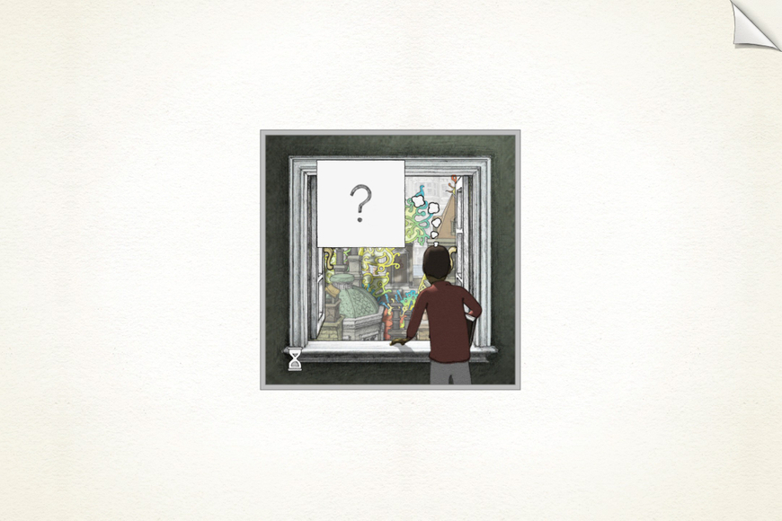
게임의 주인공 소년
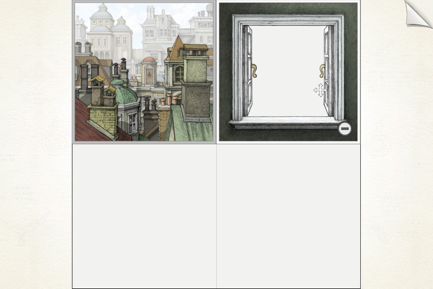
그 후 이러한 4칸의 프레임이 나오며 보시는 바와 같이 그림들을 조작해 퍼즐을 푸는 방식입니다.
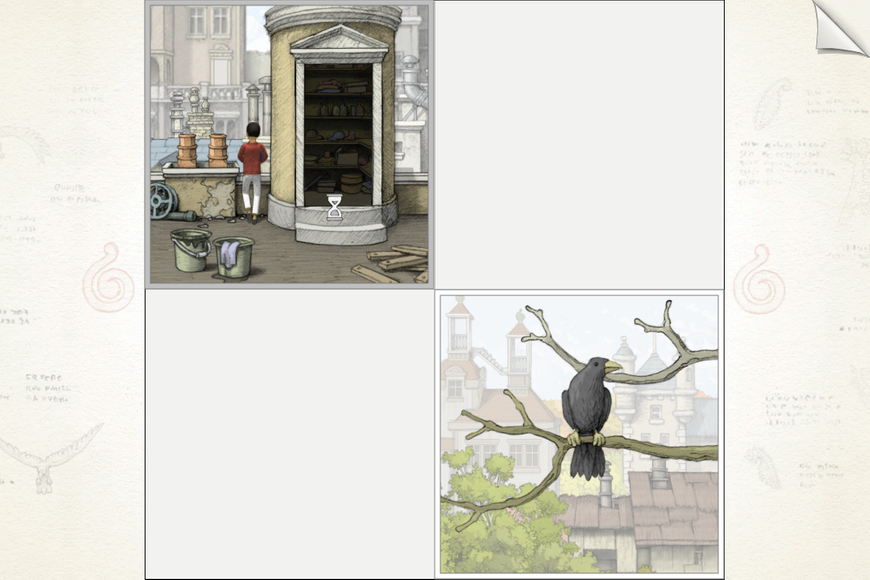
이렇게 관련없어보이는 그림도
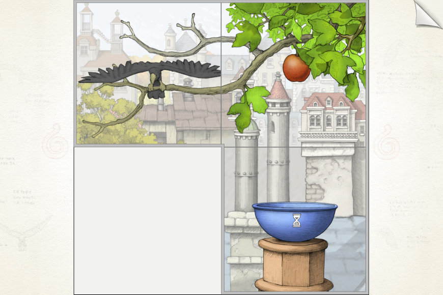
조작하면 이런 식으로 합쳐지고 퍼즐이 풀리게 됩니다.
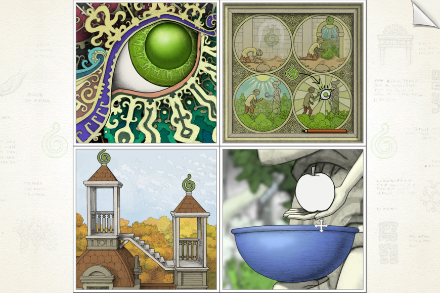
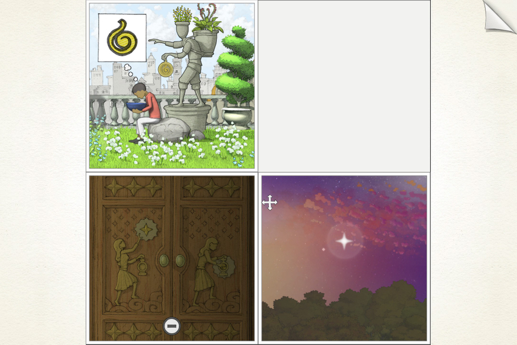
(일러스트 퀄이.. 제 만화급입니다.)
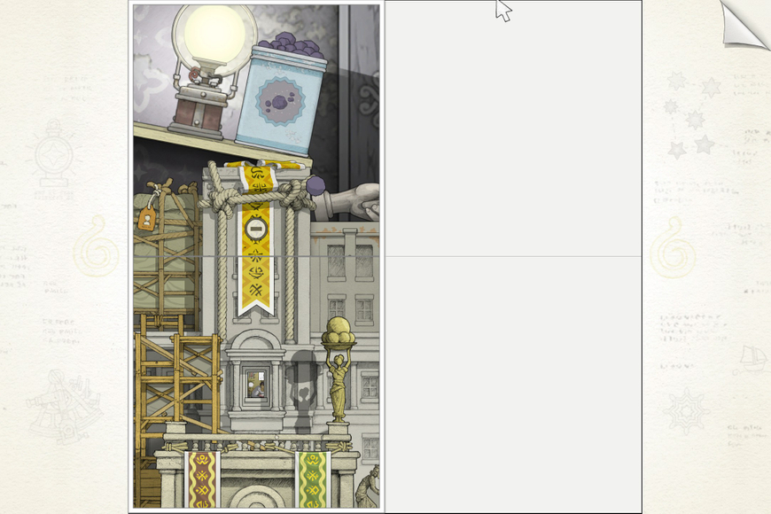
보시는 바와 같이 그림들이 이어진 부분을 찾아서 상하 또는 좌우로 잇거나 또는 그림의 프레임만 따서 그림을 분리시키거나, 그림을 확대하거나 축소하기도 하면서 각각의 그림의 중요한 부분을 찾고 그 부분을 이용해 다시 다른 그림과 상호작용을 하며 소년이 나아가는 이야기입니다.
3. 장단점과 평가
보시는 바와 같이 일러스트의 퀄리티가 말이 안될 정도이며 그림 속 부드러운 컷씬들이 굉장히 미려합니다. 마치 살아움직이는 것 같습니다. 퍼즐도 독창적이고 신기해서 퍼즐을 푸는 재미도 엄청납니다. 또한 브금도 게임에 몰입할 수 있게 도와주며 소년의 인생을 함축한듯한 스토리텔링은 플레이어에게 깊은 울림을 줍니다. 그리고 요즘 메가 세일도 겹치고 다들 바쁘신데 이 게임은 플레이타임이 2시간으로 짧아서 금방 끝낼 수 있습니다.
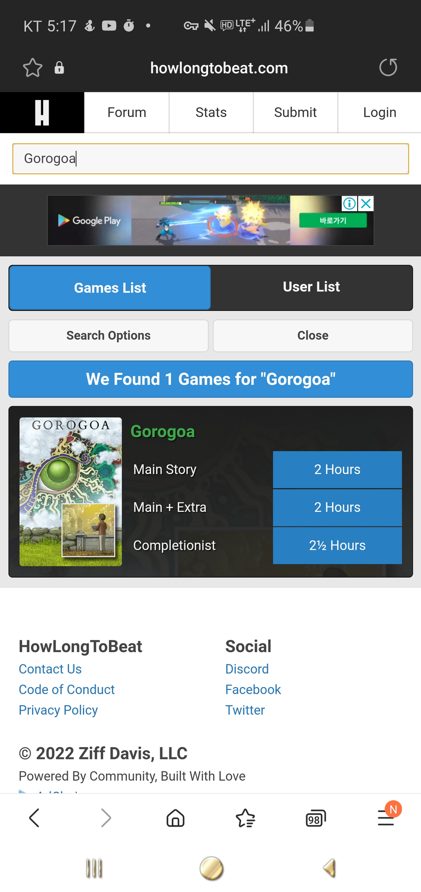
단점으로는 15000원치고 짧은 볼륨(1인 개발이라 어쩔 수 없습니다. 개인적으로는 단점이자 장점이라고 생각합니다.) 대사나 해설이 없어서 전하고자 하는 메세지가 조금은 불분명하다는 점입니다. 아 또 5년전 게임이라 방송용으로는 부적절할 것 같기도 합니다. 너무 오래돼서요...
하지만 종합적으로 보면 오락성과 예술성을 같이 잡은 명작이라고 생각합니다. 방게더에 글을 쓰기 위해 오늘 플레이를 해봤는데 정말 예술이라고 할만한 작품이었습니다.
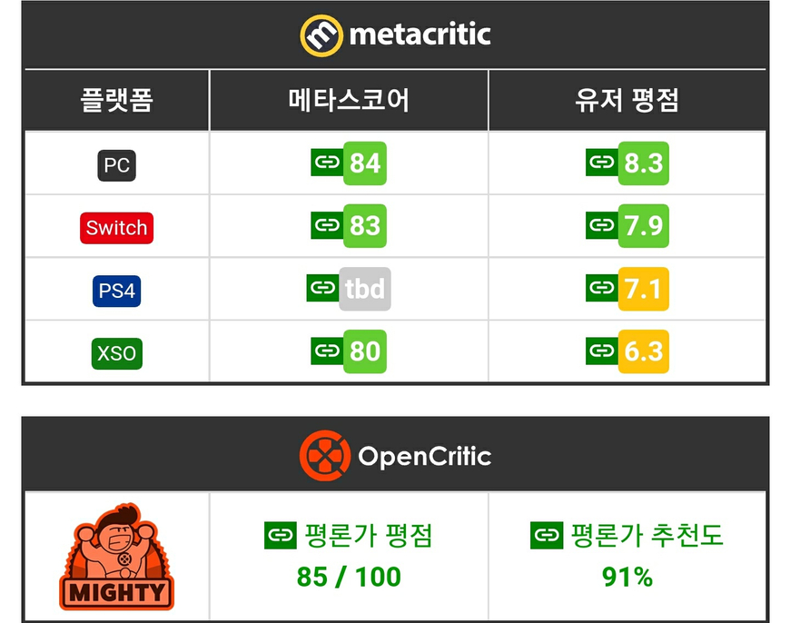
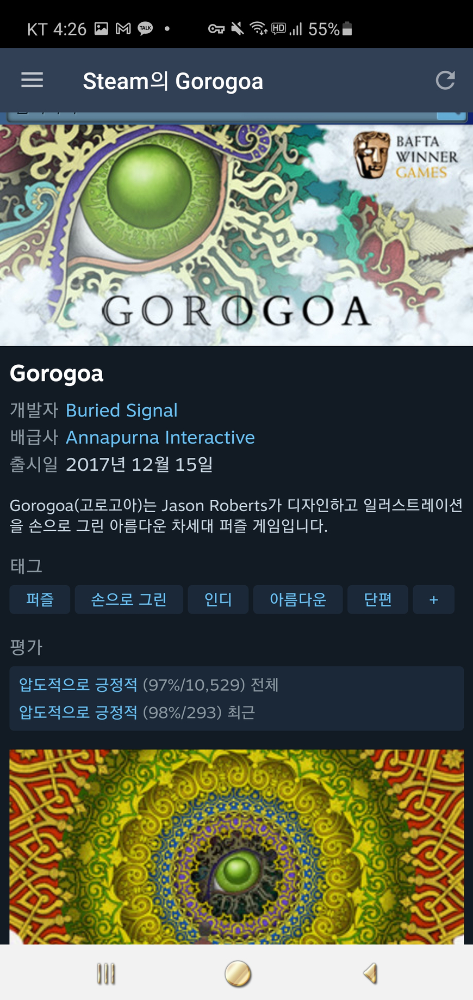
메타스코어는 80점 중반대 스팀평가는 97~98%로 굉장히 호평받는 중임을 알 수 있습니다.
4.정리
다들 바쁘실텐데 짧게 플레이해도 완결을 볼 수 있는 게임이 필요하다고 생각해요. 그래서 고로고아를 가져왔습니다. 교수님과 학습자의 2시간이 아깝지 않을 게임이 될 것입니다. ㅋㅋㅋ
게임하고 리뷰쓰니 해가 떴습니다. (사실 풍화설월, 카토 먼저 했음ㅎ)모두 연휴 즐겁게 잘 보내시길 바랍니다.
(사진 출처:모든 스샷은 플레이하면서 직접 찍은 것입니다.)
후원댓글 9개
댓글 9개 ▼